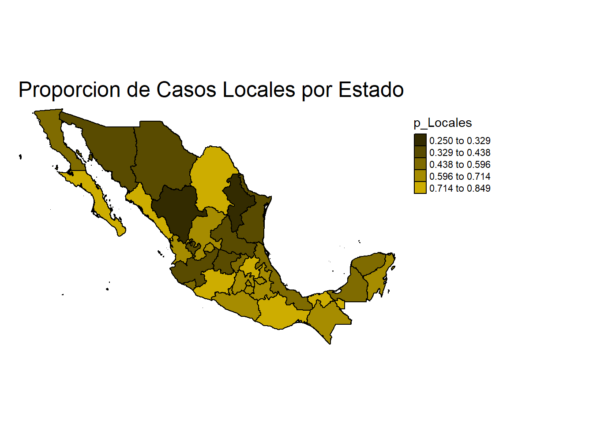
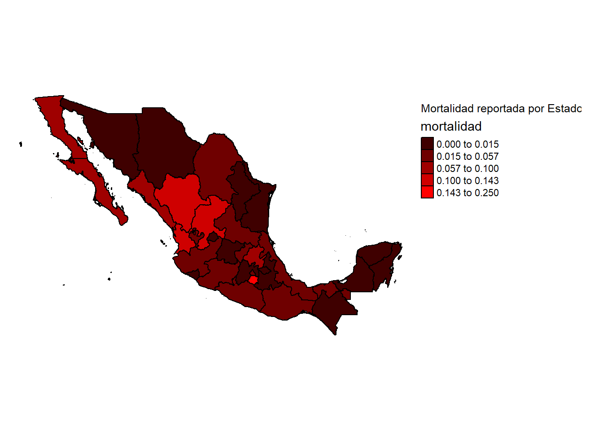
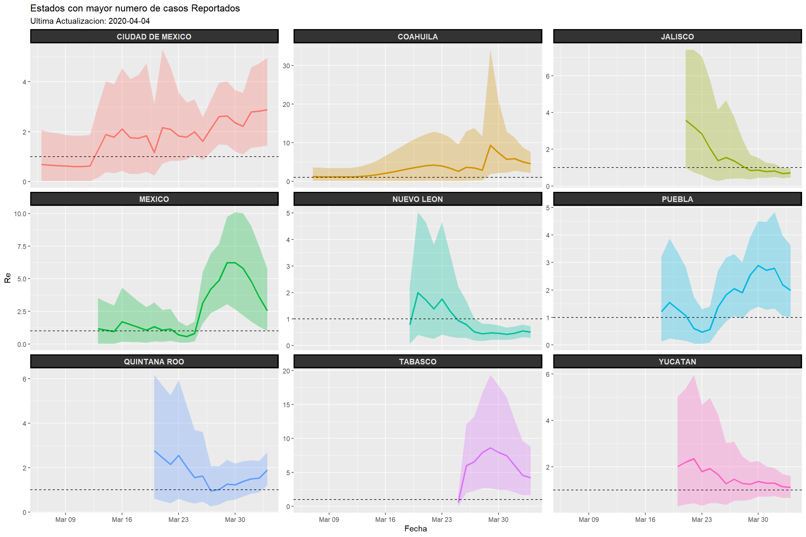

En el post anterior examinamos como obtener el \(R_0\) utilizando modelos compartamentales SIR, lo cual nos puede ayudar a estimar el impacto de la epidemia.
Ahora que ya han pasado algunos dias, contamos con mas informacion acerca del comportamiento de la enfermedad en el pais y podemos ver en una linea del tiempo (transquilos, no es otro grafico exponencial) el progreso de COVID en Mexico.
Los datos que utilizare fueron colectados por Gabriel Carranco basados en la informacion dada a conocer por el Gobierno Federal de México desglosada por entidad.
Cabe destacar que este analisis esta hecho con la informacion disponible de los casos, y puede estar sesgada a sobrerepresentar la mortalidad o subrepresentar el numero de casos
En la siguiente figura, podemos ver el incremento en numero de casos importados (rojo obscuro) y casos locales (rojo) estratificado por estado.
Podemos notar como en algunos estados como San Luis, Puebla y Jalisco los casos importados diagnosticados siguen en asenso, lo cual nos podria dar un indicio sobre como se estan llevando a cabo las recomendaciones sobre el movimiento accesando al estado. Por el contrario, otros estados como Tabasco y Michoacan muestran un incremento en el numero de casos locales diagnosticados, lo cual podria ser un indicador sobre el ingremento en la transmision local dentro del estado. En el siguiente mapa, se muestra la proporcion de casos locales por estado.

En la siguiente figura exploramos el incremento en el numero cumulativo de casos totales. Claramente la incidencia va en aumento en la mayoria de los estados. Cabe destacar que aunque las barras de los graficos parecen de la misma magnitud, las escalas del eje y son diferentes. La intensidad de las barras representan el numero total de casos en el estado.
Otro de los indicadores que podemos utilizar para evaluar el impacto de la epidemia es la mortalidad. Como lo he mencionado anteriormente, la mortalidad estimada a partir de los casos tendera a estar inflada, ya que la enfermedad se presenta de manera sublclinica en muchos de los casos y no requiere hospitalizacion. A continuacion vemos un mapa en el cual la intensidad del color refleja la mortalidad bruta de la enfermedad, Cabe destacar que aunque algunos estados como Hidalgo, Durango y Morelos presentan una mortalidad alta, el numero total de infectados es mucho menor que otras ciudades mas grandes. Esto tambien puede ser un indicador de la necesidad de incrementar el numero de muestreos para asi poder detectar no solo a los pacientes que llegan a hospital en estado critico (wue son los que tenderan mas a padecer de la enfermedad).

Como lo discutimos en el post anterior, un indicador que nos ayuda a estimar la magnitud de las epidemias es el numero \(R_0\), el cual representa el numero de casos secundarios producidos. Anteriormente calculamos un \(R_0\) para todo el periodo de la epidemia, lo cual nos da una idea de la magnitud de una manera global. Similar a \(R_0\), existe otro indicador de el numero de casos secundarios para el dia-a-dia (\(R_e\)), esto nos puede ayudar a darle un seguimiento temporal a el impacto de la enfermedad. Existen varios metodos para calcular \(R_e\), a continuacion usaremos un metodo desarrollado por Anne Cori y extendido posteriormente por Thompson et al.. Para esto utilizaremos el paquete de R EpiEstim. Uno de los principales parametros para estimar \(R_e\) es el el intervalo serial (SI), el cual es el tiempo entre el inicio de los sintomas de cada caso y el incio de los sintomas de un caso secundario a este (en otras palabras es el tiempo entre casos). Tomaremos la distribucion de SI descrita por Li et. al, en la cual se estimo una media de 7.5 dias con una desviacion estandard de 3.4 dias. Dado que aun desconocemos muchos aspectos de la enfermedad, introduciremos algunos parametros adicionales para permitir que el parametro SI tenga una variacion entre 2.3 y 8.4 usando una distribucion estandard con \(\sigma = 2\).
Ojo, este metodo esta basado en la transmision local, los datos que uso aqui son los reportados como transmision local
En nuestrso resultados podemos observar el \(R_e\) estimado en una linea del tiempo. Como mencionamos anteriormente, el objetivo para evitar que una enfermedad se convierta en epidemia es mantener el \(R_e\) por debajo de uno (el cual esta marcado con una linea punteada). La linea de enmedio representa nuestra estimacion y el sombreado que la envelve es la incertidumbre de nuestra estimacion (nuestro verdadero valor podria estar en cualquier parte del area sombreada). Es importante destacar que los ejes estan en diferentes escalas, podemos que aunque el patron para Puebla y el Estado de Mexico es parecido, los valores para el Estado de Mexico podrian alcanzar hasta un \(R_e\) de 6.

Suponiendo que el numero de casos reportados refleja con certeza la progresion de la enfermedad, nuestro analisis nos muestra que estados van en asencion en cuanto a la transmision y en cuales va decreciendo. Quiero destacar que existe mucha incertidumbre en varios de los estados, lo cual nos da una idea del posible valor de R0 pero es dificil estimar un numero en concreto.
Para los estados de Nuevo Leon y Jalisco se aprecia que el \(R_e\) ha decrecido en los ultimos dias hasta llegar cerca de la linea que marca el 1 y se debe mantener asi si queremos eliminar la transmision local. No hay que confiarze de este gráfico y pensar que la epidemia ya esta controlada en Jalisco y NL, dado al tipo de muestreo que se esta llevando a cabo podría estar subestimando el numero de casos.
Unos de los estados que mas destacan son Coahuila y Tabasco, ya que en los ultimos dias la incertidumbre llega hasta calcular un R0 de casi 30 y 15 respectivamente, lo cual es demasiado. Habria que examinar los datos mas a detalle para ver que es lo que esta pasando. Recordemos que este analiss esta basado en el numero de individuos detectados y no necesariamente el numero total de infectados. El hecho de que el \(R_e\) vaya en aumento, tambien podria reflejar el incremento en los esfuerzos de deteccion de la enfermedad.
En resumen, algunas de estas herramientas podrian ser utilizadas para informar los lugares en los que la enfermedad va en asenso y otros lugares que necesitan mas esfuerzos en cuanto a la deteccion de la enfermedad. Estas estimaciones podrian ser mucho mas acertadas con datos mas certeros sobre los el numero de infectados, ya que una de las principales prioridades en cuanto al muestreo es muestrear a aquellos que tuvieron historial de viaje o contato con viajeros, lo cual solo tendera a incrementara el numero de infectados importados y no los locales, el cual muy bien podria ser el caso de Jalisco y NL.
Por ultimo, anexo el codigo por si se desea replicar el analisis. El codigo a continuacion describe lo realizado en este post y para acceder a los datos y darles el formato necesario en este analisis se puede seguir el codigo que se encuentra en este SCRIPT
#Opciones para correr el documento (No es necesario correr esta linea)
knitr::opts_chunk$set(warning = F, message = F, echo = F)
# Librerias que usamos
library(sf)
library(ggplot2)
library(tmap)
library(earlyR)
library(EpiEstim)
library(incidence)
library(dplyr)
library(ggpubr)
# Cargar los datos (ver script sobre como se obtuvieron)
Cases_Estado <- read.csv("Data/CasesEst.csv", stringsAsFactors = F) %>%
mutate(Fecha = as.Date(Fecha, "%Y-%m-%d")) %>%
group_by(Estado) %>%
mutate(local = lead(L),
local = lag(local - L),
local = ifelse(is.na(local), L, local),
imported = lead(I),
imported = lag(imported - I),
imported = ifelse(is.na(imported), I, imported)) %>%
data.frame()
#####
# Crear las series temporales por estado:
Cases_Estado %>%
filter(I > 0) %>%
ggplot(., aes(x = Fecha)) +
geom_line(aes(y = I), color = "darkred") +
geom_line(aes(y = L), color = "red") +
facet_wrap(~Code, ncol = 4) +
ylab("Numero de casos") +
theme(legend.position = "left",
strip.text.y = element_text(size=4))
###############
# Obtener un resumen de la mortalidad y proporcion de casos locales
Estados_sum <- Cases_Estado %>%
group_by(Estado) %>%
summarise_at(.vars = c("Total_I", "I", "D", "L", "S", "R"), .funs = ~max(., na.rm = T)) %>%
mutate(mortalidad = D/Total_I, p_Locales = L/Total_I) %>%
arrange(desc(Total_I))
###################
# Cargar un mapa de Mexico
Mex1 <- readRDS("Data/gadm36_MEX_1_sp.rds") %>%
st_as_sf() %>%
select(NAME_1) %>%
mutate(NAME_1 = iconv(gsub(pattern = "DISTRITO FEDERAL",
replacement = "CIUDAD DE MÉXICO",
toupper(NAME_1)),
from = "UTF-8",
to = "ASCII//TRANSLIT")) %>%
rename(Estado = NAME_1)
######
# Crear paleta de colores para el mapa
colpal <- grDevices::colorRampPalette(colors = c("black", "gold3"))(5)
#####
# Unir la base de datos con el codigo del estado
MapDF <- Mex1 %>%
left_join(Estados_sum, by = "Estado")
#####
# Crear el mapa de proporcion de casos locales detectados
tm_shape(MapDF) +
tm_polygons(col = "p_Locales", style = "jenks", palette = colpal[-1], colorNA = colpal[1], border.col = "black") +
tm_layout(frame = F, legend.outside = T, legend.outside.position = "right", main.title = "Proporcion de Casos Locales por Estado")
#####
# Crear graficos de casos cumulativos totales por estado
Cases_Estado %>%
filter(Total_I > 0) %>%
group_by(Code) %>%
mutate(Total = max(Total_I)) %>%
arrange(desc(Total), Fecha) %>%
mutate(Code_f = factor(Code, levels = unique(.$Code))) %>%
ggplot(aes(Fecha, Total_I, fill = Total)) +
geom_bar(stat = "identity") +
scale_fill_gradient(low = "black", high = "red") +
ylab("Total de Infectados") +
theme_minimal() +
facet_grid(Code_f ~., scales="free_y")
#####
# Crear mapa de mortalidad
colpal <- grDevices::colorRampPalette(colors = c("black", "red"))(5)
tm_shape(MapDF) +
tm_polygons(col = "mortalidad", style = "jenks", palette = colpal[-1], colorNA = colpal[1], border.col = "black") +
tm_layout(frame = F, legend.outside = T, legend.outside.position = "right", title = "Mortalidad reportada por Estado")
#####
#Funcion para calcular Re y graficar la linea de tiempo
Plot_UI_R <- function(Est, color){
Est <- "JALISCO"
Est_I <- Cases_Estado %>%
group_by(Estado) %>%
mutate(local = lead(L),
local = lag(local - L),
local = ifelse(is.na(local), L, local),
imported = lead(I),
imported = lag(imported - I),
imported = ifelse(is.na(imported), I, imported)) %>%
filter(Estado == Est) %>% data.frame() %>%
mutate(cs = cumsum(local) + cumsum((imported))) %>%
filter(cs > 0) %>%
select(Fecha, local, imported) %>%
estimate_R(., method="uncertain_si",
config = make_config(list(
mean_si = 8.5, std_mean_si = 2.0,
min_mean_si = 5, max_mean_si = 14,
std_si = 3.4, std_std_si = 1.0,
min_std_si = 0.5, max_std_si = 4.0,
n1 = 1000, n2 = 1000))) %>%
.$R %>%
select(Fecha = t_start, M = `Mean(R)`, Q1 = `Quantile.0.025(R)`, Q3 = `Quantile.0.75(R)`) %>%
ggplot(., aes(x = Fecha)) +
geom_ribbon(aes(ymin = Q1, ymax = Q3), fill = color, alpha = 0.2) +
geom_line(aes(y = M), col = color, lwd = 1) +
geom_hline(yintercept = 1, linetype = "dashed") +
# lims(y = c(-1, 15)) +
labs(title = paste("Estimado R instantaneo - ", Est)) #+
#theme_minimal()
return(Est_I)
}
#Funcion para calcular Re
Plot_UI_R <- function(Est){
Est_I <- Cases_Estado %>%
group_by(Estado) %>%
mutate(local = lead(L),
local = lag(local - L),
local = ifelse(is.na(local), L, local),
imported = lead(I),
imported = lag(imported - I),
imported = ifelse(is.na(imported), I, imported)) %>%
filter(Estado == Est) %>% data.frame() %>%
filter(Total_I > 0)
Fechas_i <- Est_I %>%
mutate(i = 1:n()) %>%
select(Fecha, i)
R_i <- Est_I %>%
select(Fecha, local, imported) %>%
estimate_R(., method="uncertain_si",
config = make_config(list(
mean_si = 8.5, std_mean_si = 2.0,
min_mean_si = 5, max_mean_si = 14,
std_si = 3.4, std_std_si = 1.0,
min_std_si = 0.5, max_std_si = 4.0,
n1 = 1000, n2 = 1000))) %>%
.$R %>%
left_join(Fechas_i, by = c("t_end" = "i")) %>%
mutate(Estado = Est)
return(R_i)
}
# Correr la funcion para los primeros 9 estados
R_L <- lapply(Estados_sum$Estado[1:9], Plot_UI_R) %>%
do.call(rbind, .)
# Graficar el resultado
R_L %>%
select(Fecha, M = `Mean(R)`, Q1 = `Quantile.0.025(R)`, Q3 = `Quantile.0.75(R)`, Estado) %>%
ggplot(., aes(x = Fecha)) +
geom_ribbon(aes(ymin = Q1, ymax = Q3, fill = Estado), alpha = 0.3) +
geom_line(aes(y = M, col = Estado), lwd = 1) +
geom_hline(yintercept = 1, linetype = "dashed") +
ylab("Re") +
ggtitle(label = "Estados con mayor numero de casos Reportados", subtitle = paste("Ultima Actualizacion:", Sys.Date())) +
facet_wrap(~Estado, ncol = 3, scales = "free_y") +
theme(legend.position = "n",
strip.text.x = element_text(size = 10, face = "bold", color = "grey90"),
strip.background = element_rect(color="black", fill="grey20", size=1.5, linetype="solid"))